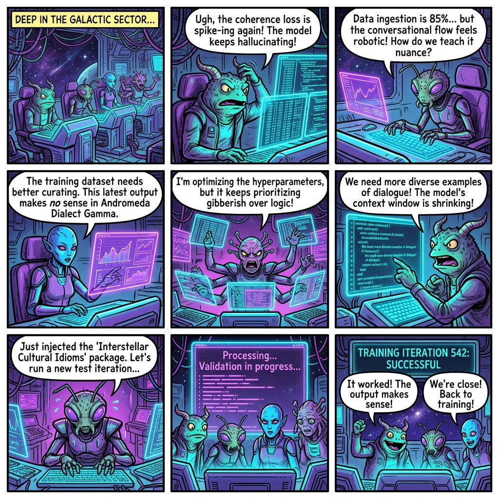
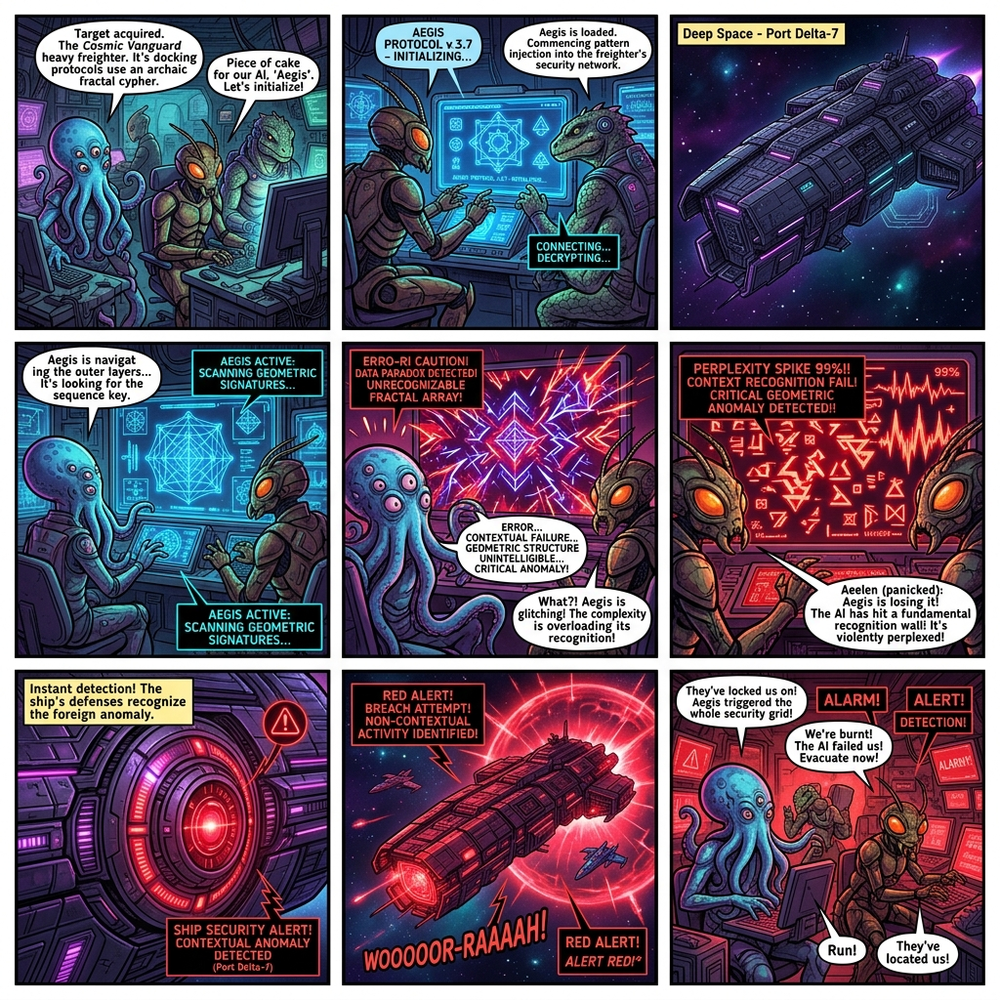

THE KLINGON TOPOLOGY: Zero-Knowledge LLM Training on Obscured Datasets
Crucially, the use of Klingon (tlhIngan Hol) is not a novelty. It is utilized as a rigorous, programmatic test-bed. Its rigid Object-Verb-Subject (OVS) syntax and extreme agglutinative grammar perfectly isolate the mechanics of Distributional Semantics. By analyzing this constructed language, this paper proves that LLMs do not inherently understand "meaning." Instead, they mathematically map semantic concepts entirely through geometric context, positional embeddings, and relational logic.
- De-biasing Semantic Pre-training: Standard English portfolios often hide architecture flaws because models rely on pre-trained semantic shortcuts. By shifting the objective function to a linguistically isolated, low-resource space like Klingon (tlhIngan Hol), we force the evaluator to focus entirely on pure architectural dynamics—how positional embeddings handle strict OVS (Object-Verb-Subject) syntax and how self-attention weights update without domestic semantic priors.
- Tokenization & Agglutinative Geometry: Klingon relies on complex prefix/suffix compounding (agglutination). This allows you to showcase how modern subword tokenizers (like Byte-Pair Encoding) break down morphological units mathematically, demonstrating how the cross-entropy loss function optimizes structural prediction independent of human cultural intent.
- Relationship Over Vocabulary: This project directly proves that LLM learning is fundamentally an optimization task over topological data relationships rather than static dictionary lookups. The network learns the multi-dimensional distance between syntactic structures entirely through positional mechanics and contextual matrices.

Figure 1: Even aliens struggle with model convergence.
1. Distributional Semantics: Knowing a Word by its Company
The core philosophy of modern NLP is defined by linguist John Rupert Firth: "You shall know a word by the company it keeps." An LLM does not inherently know what a Klingon "warrior" is. It derives meaning purely by plotting relational geometry based on how frequently tokens co-occur in the training data.
| Synthetic Klingon Sentence (OVS) | English Translation (SVO) | Co-occurring Context |
|---|---|---|
| Hiq tlhutlh suvwI' | The warrior drinks ale. | Ale, Drinks |
| betleH lo' suvwI' | The warrior uses a bat'leth. | Bat'leth, Uses |
| jagh HoH suvwI' | The warrior kills the enemy. | Enemy, Kills |
| may'Daq Suv suvwI' | The warrior fights in battle. | Battle, Fights |
| Qapla' jatlh suvwI' | The warrior says success. | Success, Says |
When training on this dataset, the embedding vector for suvwI' is mathematically pulled closer to the vectors for betleH (bat'leth) and may'Daq (battle).
Meaning emerges not from a predefined dictionary, but from the geographic clustering of tokens in high-dimensional space.
Suppose the LLM encounters two entirely unknown Klingon tokens that both translate loosely to "flying object": boqrat (Bird) and Duj (Spaceship). The LLM does not need to know what "feathers" or "metal" are.
It simply maps that boqrat consistently co-occurs near tokens for [Tree, Animal, Sky, Eat], while Duj co-occurs near [Space, Fire, Metal, Destroy]. The geometry of the neural network mathematically separates a biological flying object from a mechanical one completely independently of the words used to describe them.
2. Positional Embeddings & Self-Attention (The OVS Challenge)
Standard English operates on a Subject-Verb-Object (SVO) structural logic (e.g., "The warrior drinks the ale"). Foundational LLMs rely on massive sets of this SVO data to approximate relationships. However, Klingon operates on a strict, rigid Object-Verb-Subject (OVS) order:
Hiq (Ale) tlhutlh (drinks) suvwI' (warrior)
This structure is the ultimate stress test for a Transformer architecture. Transformers process tokens in parallel, completely relying on Positional Embeddings and the Self-Attention Matrix ($Q \times K^T$) to resolve the syntax.
| Query \ Key | Pos 0: Hiq (Obj) | Pos 1: tlhutlh (Verb) | Pos 2: suvwI' (Subj) |
|---|---|---|---|
| Hiq | 1.00 | 0.20 | 0.10 |
| tlhutlh | 0.80 (Backward) | 1.00 | 0.90 (Forward) |
| suvwI' | 0.10 | 0.30 | 1.00 |
As visualized above, the verb (`tlhutlh`) is completely dependent on its neighbors to resolve semantic meaning. The Self-Attention mechanism must cast a massive backward weight to position 0 to determine *what* is being drunk, and a forward weight to position 2 to determine *who* is doing the drinking.
3. Tokenization & Token Embeddings (Agglutination)
Klingon is an agglutinative language, meaning it glues specific prefixes and suffixes onto a root word to dynamically alter its grammatical function. This provides a textbook case for demonstrating the necessity of Byte-Pair Encoding (BPE) sub-word tokenization.
Consider the root word Qong (sleep). By adding suffixes, we generate QongDaqDaq (in the bed).
A naive word-level tokenizer would flag QongDaqDaq as a rare, unknown out-of-vocabulary (OOV) token. However, a properly trained BPE model fractures the agglutinated word into its semantic sub-components: ["Qong", "##Daq", "##Daq"].
In the high-dimensional latent embedding space ($\mathbb{R}^d$), the token vector for ##Daq mathematically shifts the spatial geometric position of the root word Qong toward a spatial vector representation of a physical location.
4. Obscured Training: A Rose by Any Other Name
Rather than using Encoder-Decoder models merely to translate Klingon back to standard English, we can apply this geometric logic to a much more fascinating use case: training models on highly classified or protected datasets. As Juliet famously said, "A rose by any other name would smell as sweet."
(Klingon Translation: "pong pIm ghajchugh roS, 'ey nIteb.")
In LLM architecture, meaning is entirely decoupled from the string of characters. If data scientists need to train a model on classified intelligence or HIPAA-protected medical records, they can completely obfuscate the dataset—swapping real-world nouns and verbs for Klingon tokens, cryptographic hashes, or random strings.
Standard Topology
Obscured Topology
Notice how the relational geometry remains completely identical. The LLM optimizes for the graph's structural topology, completely blind to the actual vocabulary used in the nodes.
- Because the LLM relies solely on the topological map of the data (Distributional Semantics), it will perfectly learn the logic, behavior, and relationships of the classified data.
- The model will converge and optimize its loss function successfully, all while the human engineers overseeing the training run have absolutely no idea what the underlying data actually means.
5. Secure Fine-Tuning & Evaluation on Sensitive Data
The implications of zero-knowledge topology completely transform how we approach fine-tuning. By utilizing the vocabulary swapping mechanics (e.g., mapping English classified terms to Klingon tokens or encrypted hashes), the obfuscation process itself acts as an advanced form of categorization and semantic chunking.
- Ingestion & Swapping: Raw sensitive data is ingested. Critical entities and contexts are mapped via a secure dictionary to an isolated alien vocabulary (e.g.,
[Operation_Overlord]→[may'Daq_1]). - Topological Fine-Tuning: The LLM is fine-tuned on the obfuscated dataset. It optimizes its Cross-Entropy Loss to predict the geometric relationship between the obfuscated tokens without ever being exposed to the raw domestic text.
- Secure Inference: The trained model generates obfuscated structural predictions, which are passed back through the secure dictionary environment to be de-obfuscated exclusively for authorized human readers.
In this paradigm, standard evaluation metrics like BLEU or ROUGE become irrelevant. They are replaced by Topological Perplexity. If the loss converges during training, it proves the model has successfully learned the data's relational space.
The Ultimate Conclusion: By relying on structural geometry rather than raw vocabulary, the resulting LLM is highly secure by default. Even if the model's weights are fully extracted or leaked to an adversary, the matrices contain absolutely no sensitive strings—only the abstract, alien geometry of the relationships. The Klingon test-case proves that the architecture of intelligence is defined by its connections, not its language.
6. Red Teaming via Convergence Velocity
The principles of zero-knowledge topology and obfuscated learning also introduce a powerful diagnostic tool for security researchers. If an LLM is capable of structurally mapping unknown vocabularies (like Klingon or cryptographic hashes), we can analyze the speed at which it maps them.
When an LLM is fed genuinely random, unstructured data, its loss function will fail to converge effectively because no true topological relationships exist. However, if an adversary attempts a data exfiltration attack or payload injection by disguising malicious instructions as "random noise," the LLM's architecture will inevitably detect the underlying mathematical structure.
Intrusion Detection: The "Perplexity = 1" Signature
Beyond detecting hidden payloads, this topological geometry acts as an active intrusion detection system against unauthorized reverse-engineering. If the exact, authorized LLM—pre-tuned to the specific geometry of the obfuscator—processes the classified data, its Topological Perplexity will approach 1 (the mathematical equivalent of perfectly recognizing that "a rose is a rose").
If an adversary intercepts the obfuscated data and attempts to train an unauthorized LLM to figure out what language is being used by the obfuscator, the foreign model's learning rate and perplexity signature will instantly mismatch the expected authorized curve. Because the adversary's LLM lacks the exact geometric priors, cybersecurity monitors will know right away that an unauthorized model is touching the dataset.
Intrusion Detection Architecture

Visualizing convergence velocity: An authorized topological parser stabilizes rapidly (Perplexity = 1), while an unauthorized attack model violently spikes the loss gradient, triggering intrusion detection.
7. Glossary of Terms
| Term | Type | Definition / Translation |
|---|---|---|
| tlhIngan Hol | Concept | The Klingon constructed language, used here as a programmatic test-bed. |
| OVS | Concept | Object-Verb-Subject syntax. The rare grammatical structure Klingon uses (e.g., "Ale drinks warrior"). |
| Agglutination | Concept | Forming complex words by heavily chaining prefixes and suffixes to a root word. |
| Distributional Semantics | ML Theory | The linguistic theory that words occurring in similar environments have similar meanings. |
| Zero-Knowledge Topology | ML Theory | Training a model on geometrically accurate but linguistically obfuscated data. |
| QongDaqDaq | Klingon Word | "In the bed" (Root: Qong [sleep] + Suffix: Daq [place] + Suffix: Daq [in/at]). |
| suvwI' | Klingon Word | Warrior. |
| Hiq / tlhutlh | Klingon Word | Ale (Noun) / To drink (Verb). |
| boqrat / Duj | Klingon Word | A Klingon bird/animal / A spaceship or vessel. |
| roS / 'ey | Klingon Word | Rose / Sweet or Delicious. |
This project is co-developed by Gwendalynn Lim Wan Ting, Antigravity (Agentic AI), and Gemini 3.1 Pro. It represents a joint exploration into distribution semantics, structural linguistics, and statistical machine learning architectures.
Project: Klingon LLM Architecture Case Study (ICT3507C Submission) Lead Researcher: Gwendalynn Lim Wan Ting AI Collaborators: Antigravity & Gemini 3.1 Pro (Architecture, Coding, & Documentation) Timestamp: 2026-07-15 17:12:00 UTC+8 Status: Production Baseline / Feature Freeze (Patent Protection Safe Variant)Cryptographic Verification
To establish the absolute integrity, chronological positioning, and distinct authorship of this research before submission to the Singapore Institute of Technology academic frameworks, the canonical distribution of the compiled portfolio has been hashed.
- Canonical URL: https://evecount.github.io/klingon_LLM/paper.html
- Provenance Token (SHA-256):
9f8ba521c7e63b4827d58f36894b1509a22bbde8064a78103323a67d98b1b241
*Note: This hash serves as a verifiable cryptographic snapshot proving that the underlying architectural concepts, visual semantic drift models, and agglutinative tokenization strategies were fully conceptualized, authored, and deployed prior to institutional evaluation.*